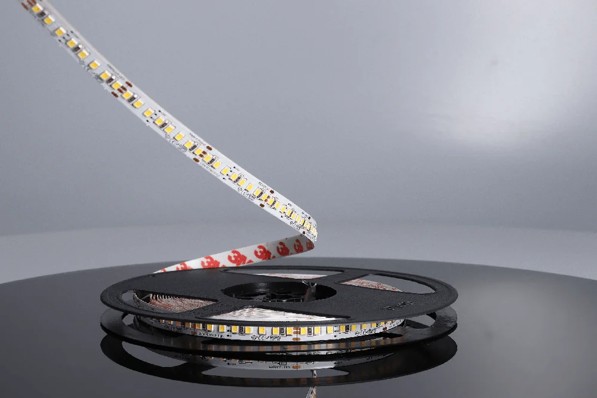

ŚWIATŁO NA CO DZIEŃ
DELUX 160LED Standard
Uniwersalna baza oświetlenia liniowego: do blatów, stanowisk pracy i codziennie używanych przestrzeni.
7lat gwarancji
dla serii DELUX 160LED Standard
Skomponuj zestaw w 3D dla serii DELUX 160LED Standard

POZNAJ SERIĘ
Światło do Twojego projektu.
Model 160LED pełni w serii DELUX rolę uniwersalnego źródła światła zadaniowego. Sprawdza się jako oświetlenie blatów kuchennych, stanowisk pracy, ciągów komunikacyjnych, regałów handlowych czy sufitów liniowych.
Gęste rozmieszczenie 160 diod na metr pomaga uzyskać równomierną linię pod odpowiednio dobraną osłoną. Zasilanie 24 V oraz podłoże PCB 4 oz to podstawa tej rodziny. Z kompatybilnym ściemniaczem możesz dopasować jasność instalacji do pory dnia.
Gdzie się sprawdzi?
Blaty kuchenne, stanowiska pracy, korytarze i sufity liniowe.